| 基礎からのベイズ統計学 |
| 基礎からのベイズ統計学 |
質量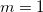、重力加速度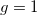の下で、運動エネルギーとポテンシャルエネルギーはそれぞれ
 |
(5.34) | ||
| 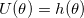 | (5.35) |
となるので1、ハミルトニアンは
| 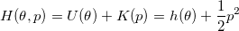 | (5.36) |
となる。
位置と運動量を座標とする空間
位相空間においては、
可逆
体積保存
が成り立つ。
ここで、物体はハミルトニアンが常に一定になるように運動する。 つまりハミルトニアンを時間の関数とすると、
| 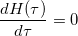 | (5.18) |
が成り立つ。 ここから、物体の動きを予測するハミルトンの運動方程式
| 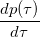 | 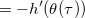 | (5.27) | ||
| 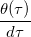 | 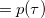 | (5.28) |
が導かれる。
ハミルトンの運動方程式を数値的に解く方法
| 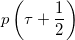 | 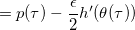 | (5.31) | ||
| 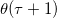 | 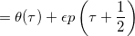 | (5.32) | ||
| 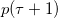 | 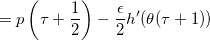 | (5.33) |
事後分布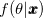と、それとは独立な標準正規分布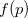との同時分布
| 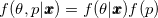 | (5.37) |
を考え、この同時分布から乱数を発生させる2。
このとき、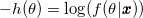とおくと、
| 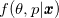 | 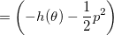 | (5.44) | ||
 |
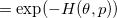 | (5.45) |
が導かれる。
事後分布とそれとは独立な標準正規分布との同時事後分布の確率密度関数は、負のハミルトニアンに等しい。
ここで、位相空間の可逆性3と体積保存性4より、詳細釣り合い条件
 |
(5.48) |
が成立するが、リープフロッグ法に導入した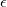により数値計算上は完全には成立しない。 そこで、補正係数
| 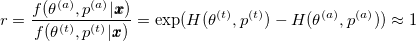 | (5.49) |
を用いる5。
初期値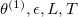を定める6。
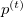を標準正規分布から発生
リープフロッグ法により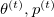から に移動
に移動
確率 で受容（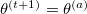）
で受容（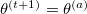）
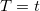で終了
標準正規分布から乱数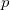発生（運動量）、その時点での位置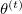と運動量からハミルトンの運動方程式に従って時間 後の物体の位置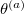と運動量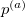を予測。ハミルトニアンの比に従ってそれを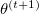として受容。はその都度使い捨て7。
後の物体の位置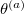と運動量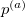を予測。ハミルトニアンの比に従ってそれを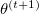として受容。はその都度使い捨て7。
初期値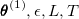を定める8。
 を標準正規分布から発生（独立な個）
を標準正規分布から発生（独立な個）
リープフロッグ法により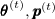から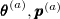に移動
確率で受容（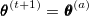）
で終了
ただし、ハミルトニアンは
| 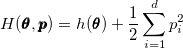 | (5.55) |
であり、
| 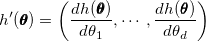 | (5.57) | ||
| 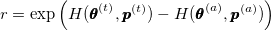 | (5.58) |
を用いる。
平均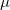、分散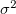の正規分布について事後分布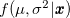を推測したいとする。 とのいずれにも一様事前分布を設定した場合、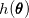は
| 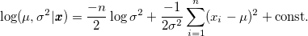 | (5.59) |
の右辺第2項までにマイナスをかけたものを取れば良い。
また、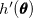には
| 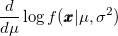 | 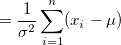 | (5.60) | ||
| (5.61) |
を利用する。
Footnotes
 はリープフロッグ法の遷移時間。は自動調節する必要がある。 第6章の章末問題を解くとわかるが、のようなデータだと、やの事後分布をリープフロッグで更新しようとしても、標準正規分布から発生させた乱数では1ステップあたりの遷移が（データの単位に比べて）少なすぎるため更新がほとんど進まない。はリープフロッグ法の遷移時間。
はリープフロッグ法の遷移時間。は自動調節する必要がある。 第6章の章末問題を解くとわかるが、のようなデータだと、やの事後分布をリープフロッグで更新しようとしても、標準正規分布から発生させた乱数では1ステップあたりの遷移が（データの単位に比べて）少なすぎるため更新がほとんど進まない。はリープフロッグ法の遷移時間。| 基礎からのベイズ統計学 |